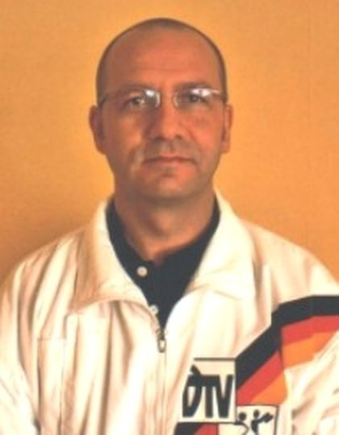

Götz Ströhle, Sportphysiotherapeut

Physiotherapie Golzheim – Privatpraxis –
- Allgemeine Hochschulreife
- Studium
- Ausbildung an den Universitätskliniken Düsseldorf
- Anerkennungspraktika in der Neurochirurgie der Universitätskliniken Düsseldorf und im Kurmittelhaus Sylt
- Zahlreiche berufsbezogene Fortbildungen
- Kinesiotaping-Ausbildung bei Kenzo Kase
- Mehrjährige freiberufliche Tätigkeit in Physiotherapiepraxen in Düsseldorf
- 2002 Gründung von PHYSIOPOWERSURGE
- Partner namhafter Unternehmen in Düsseldorf im Bereich Betriebliches Gesundheitsmanagement
- Sportphysiologischer Betreuer auf Bundesligaturnieren und Deutschen Meisterschaften
- Betreuer von Tanzteams aus Deutschland, Holland, Ungarn und Polen auf Europa- sowie Weltmeisterschaften
- Therapeut von international bekannten Persönlichkeiten aus Deutschland, Spanien und USA
- Mitwirkender bei Fernsehproduktionen im Bereich Physiotherapie und Wellness